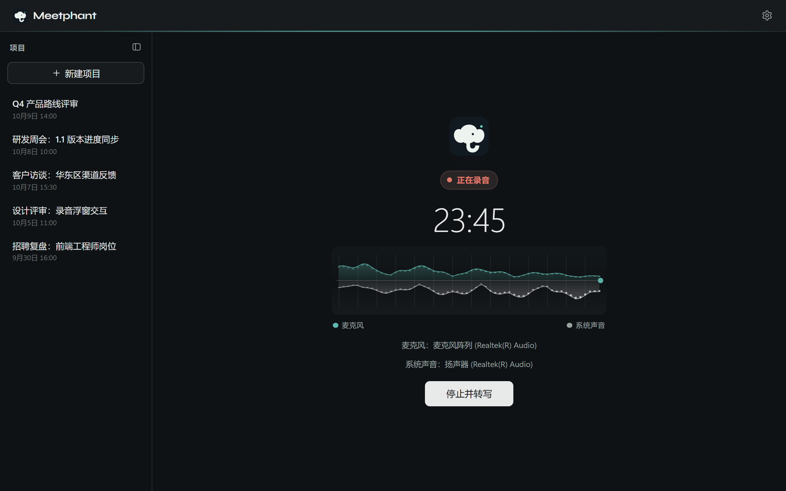

01 / 03
Record any meeting, no platform lock-in
Capture your microphone and system audio at the same time. Tencent Meeting, Feishu, Zoom, Teams or an in-person room — one click and you are recording.
- Live dual-track levels for mic and system audio, so you know it is working
- No meeting-app plugins, bots or host permissions required
- Already have a recording? Import wav, mp3, m4a and more
